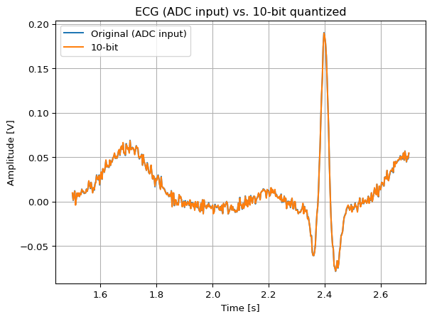
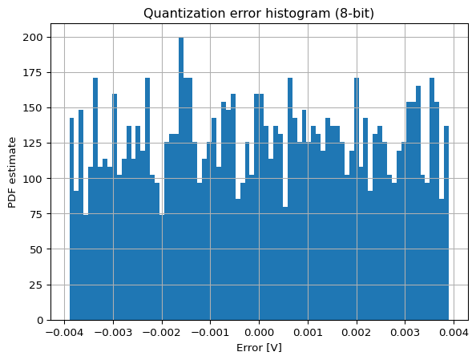

# Synthetic ECG, uniform quantization at multiple bit depths, SNR and plots
import numpy as np
import matplotlib.pyplot as plt
np.random.seed(42)
# --- 1) Build a simple ECG template (P-QRS-T) using Gaussians ---
fs = 360.0 # sampling rate [Hz]
T = 5.0 # duration [s]
t = np.arange(0, T, 1/fs)
hr = 60.0 # heart rate [bpm]
RR = 60.0/hr # seconds per beat
# Gaussian helper
def g(t, mu, sigma, A):
return A*np.exp(-0.5*((t-mu)/sigma)**2)
# One-beat template (times in seconds relative to beat onset)
def ecg_template(t):
# amplitudes in mV, widths in s (very simplified)
P = g(t, 0.20, 0.045, 0.10)
Q = g(t, 0.36, 0.010, -0.25)
R = g(t, 0.40, 0.012, 1.00)
S = g(t, 0.44, 0.016, -0.35)
T = g(t, 0.70, 0.080, 0.30)
return P + Q + R + S + T
# Tile the template every RR seconds
ecg_mV = np.zeros_like(t)
for k in range(int(np.ceil(T/RR))):
tau = t - k*RR
ecg_mV += ecg_template(tau)
# Optional baseline wander + small EMG-like noise (for realism)
wander = 0.05*np.sin(2*np.pi*0.3*t) # 0.05 mV @ 0.3 Hz
noise = 0.02*np.random.randn(len(t)) # 0.02 mV RMS
ecg_mV = ecg_mV + wander + noise
# --- 2) Analog front-end gain and ADC setup ---
G = 200.0 # gain: mV (input) -> V (ADC input)
Vfs = 1.0 # full-scale = +/-1 V
Vmin, Vmax = -Vfs, Vfs
x_adc = (ecg_mV/1000.0)*G # convert mV to V and apply gain
def quantize_uniform(x, bits, Vmin, Vmax, mid_tread=True):
# Saturate to avoid numeric overflow
x_clip = np.clip(x, Vmin, Vmax)
L = 2**bits
Delta = (Vmax - Vmin)/L
if mid_tread:
y = Delta*np.round(x_clip/Delta)
else:
y = Delta*(np.floor(x_clip/Delta) + 0.5)
y = np.clip(y, Vmin, Vmax) # ensure within codebook range
return y, Delta
def snr_db(x, y):
# SNR over the un-clipped region; compute RMS of signal and error
e = x - y
# Remove DC for SNR assessment
x_ac = x - np.mean(x)
e_ac = e - np.mean(e)
Px = np.mean(x_ac**2)
Pe = np.mean(e_ac**2)
return 10*np.log10(Px/Pe), e
# --- 3) Quantize at different bit depths ---
bits_list = [8, 10, 12]
results = {}
for b in bits_list:
y_adc, Delta = quantize_uniform(x_adc, b, Vmin, Vmax, mid_tread=True)
snr, e = snr_db(x_adc, y_adc)
results[b] = dict(y_adc=y_adc, Delta=Delta, snr_db=snr, err=e)
# Print a small summary (ADC-domain). Input-referred values via division by G.
print("Summary (ADC domain):")
for b in bits_list:
Delta = results[b]["Delta"]
snr = results[b]["snr_db"]
print(f"{b:2d}-bit -> LSB Δ = {Delta*1e3:.3f} mV, Theoretical/Measured SNR ≈ {snr:5.1f} dB")
# Input-referred LSB and noise RMS for the 12-bit case
Delta_in = results[12]["Delta"]/G
sigma_q_in = Delta_in/np.sqrt(12)
print(f"\nInput-referred (12-bit): Δ_in = {Delta_in*1e6:.3f} µV, σ_q ≈ {sigma_q_in*1e6:.3f} µV RMS")
# --- 4) Plot: original vs quantized (choose 10-bit for visibility) ---
b_plot = 10
idx = (t >= 1.5) & (t <= 2.7) # show about one beat
plt.figure()
plt.title(f"ECG (ADC input) vs. {b_plot}-bit quantized")
plt.plot(t[idx], x_adc[idx], label="Original (ADC input)")
plt.plot(t[idx], results[b_plot]["y_adc"][idx], label=f"{b_plot}-bit")
plt.xlabel("Time [s]")
plt.ylabel("Amplitude [V]")
plt.legend()
plt.grid(True)
plt.show()
# --- 5) Plot: quantization error histogram (8-bit to exaggerate steps) ---
b_err = 8
plt.figure()
plt.title(f"Quantization error histogram ({b_err}-bit)")
plt.hist(results[b_err]["err"], bins=80, density=True)
plt.xlabel("Error [V]")
plt.ylabel("PDF estimate")
plt.grid(True)
plt.show()Summary (ADC domain):
8-bit -> LSB Δ = 7.812 mV, Theoretical/Measured SNR ≈ 24.1 dB
10-bit -> LSB Δ = 1.953 mV, Theoretical/Measured SNR ≈ 36.0 dB
12-bit -> LSB Δ = 0.488 mV, Theoretical/Measured SNR ≈ 48.1 dB
Input-referred (12-bit): Δ_in = 2.441 µV, σ_q ≈ 0.705 µV RMS
